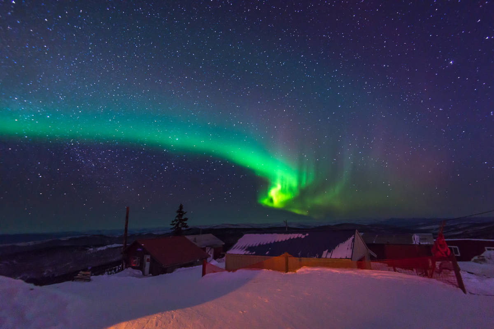
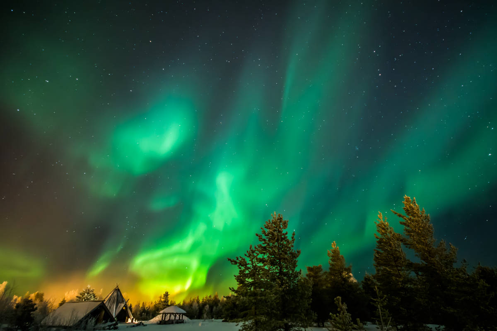
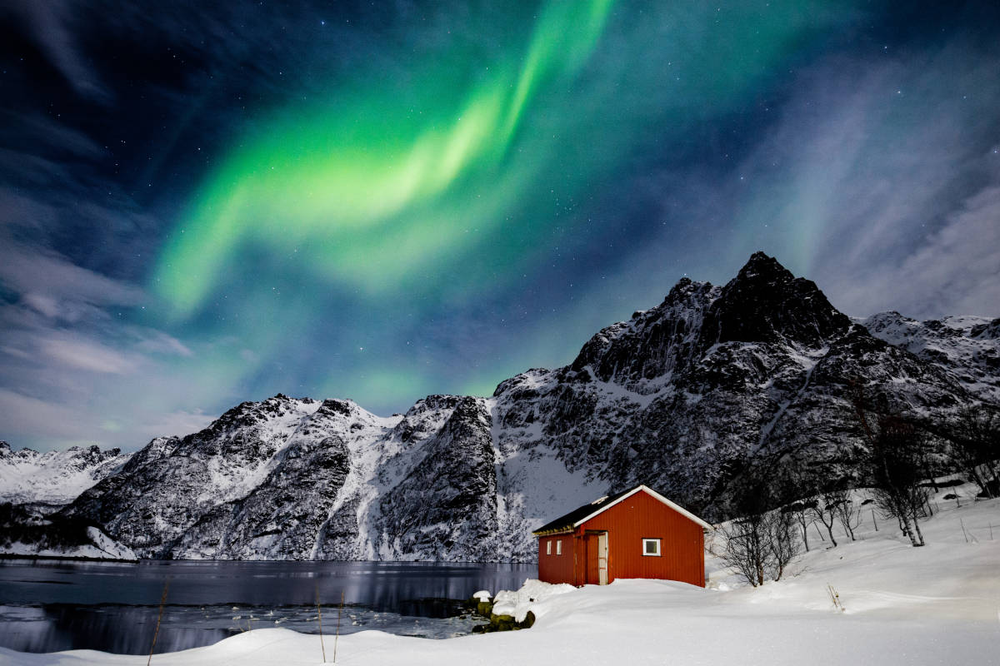
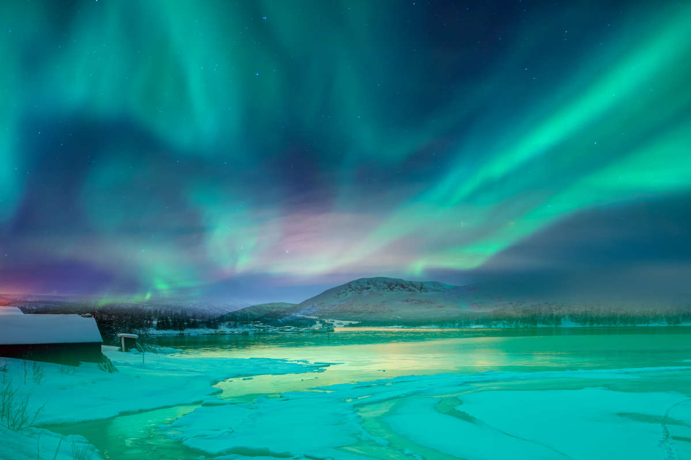
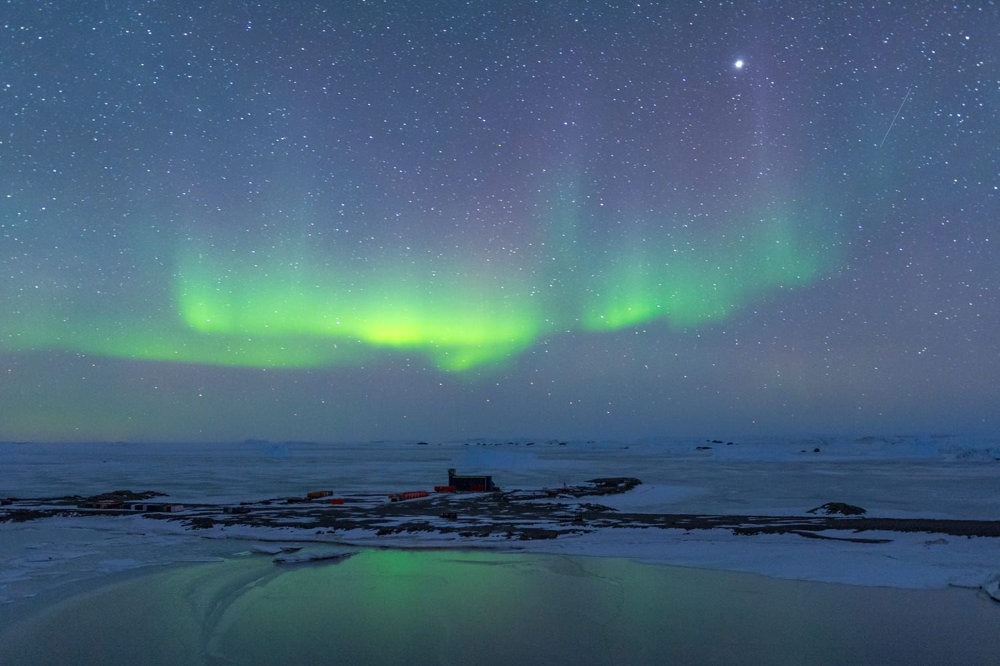

Si te encuentras próximo al Polo Norte o al Polo Sur, te puedes maravillar con un espectáculo hermoso de luces naturales que ocurre en el cielo. Estas luces se llaman auroras polares, Cuando las observas cerca del Polo Norte, se llama aurora boreal (luces del Norte), mientras que si la observas cerca del Polo Sur, se llama aurora austral (luces del Sur). En este fenómeno de luz atmosférica caracterizada por velos extremadamente coloreados en el cielo nocturno, el verde es el color que predomina.
Las auroras se producen principalmente en las áreas cercanas a los polos magnéticos, en una zona anular llamada "zona auroral" (entre 65 y 75 ° de latitud). Por lo que, las regiones más afectadas por este fenómeno son Groenlandia, Alaska, Antártida, Norte de Canadá, Islandia, Escandinavia, Finlandia, así como en las Islas Shetlands al norte del Reino Unido.
Aurora boreal observada en Fairbanks, Alaska.
Aurora Boreal observada en Rovaniemi, Finlandia..
Aurora boreal observada en Svolvær, Islas Lofoten, Noruega.
Aurora boreal observada en Tromsø, Noruega.
Aurora austral observada desde la Antártida.
Pero . . . ¿quién causa las auroras polares?
Aunque te parezca sorprendente, el causante de estas hermosas luces en los cielos terrestres es ni más ni menos que el Sol.
¿Y cómo lo hace?
Todos los días, el Sol nos envía luz, así como energía y partículas cargadas eléctricamente (electrones, protones e iones positivos), esto a través del viento solar; sin embargo, la cantidad de energía y el número de partículas que llegan a la Tierra no siempre es el mismo. Como el Sol es una estrella, en ocasiones en su superficie ocurren tormentas o erupciones, y cuando ocurre un tipo de tormenta llamada eyección de masa coronal, el Sol avienta una gran cantidad de partículas cargadas que viajan a altas velocidades; algunas de estas partículas entran en colisión con nuestro escudo protector, es decir, con el campo magnético de la Tierra.
Luego, las partículas eléctricas de alta energía son capturadas por las líneas del campo magnético terrestre, y estas viajan hasta el área llamada zona auroral en los Polos Norte y Sur. Ahí, las partículas interactúan con los átomos de la ionosfera provocando que estos liberen un poco de energía, como fotones de luz visible, produciéndose así las hermosas luces en el cielo.
La naturaleza de los gases que componen la atmósfera (oxígeno, hidrógeno, nitrógeno, etc.) depende de la altitud, esto explica en parte las variaciones de los colores de las auroras. Por ejemplo, el oxígeno emite luz verde y roja, el nitrógeno brilla intensamente azul y púrpura.
Ahora, te preguntarás . . . ¿otros planetas tienen auroras?
Si un planeta tiene una atmósfera y un campo magnético, es muy probable que tenga auroras. Gracias a los telescopios espaciales, hemos visto increíbles auroras en dos planetas del Sistema Solar: Júpiter y Saturno.
Auroras observadas en la banda del ultravioleta en Júpiter.
Fuente: NASA.